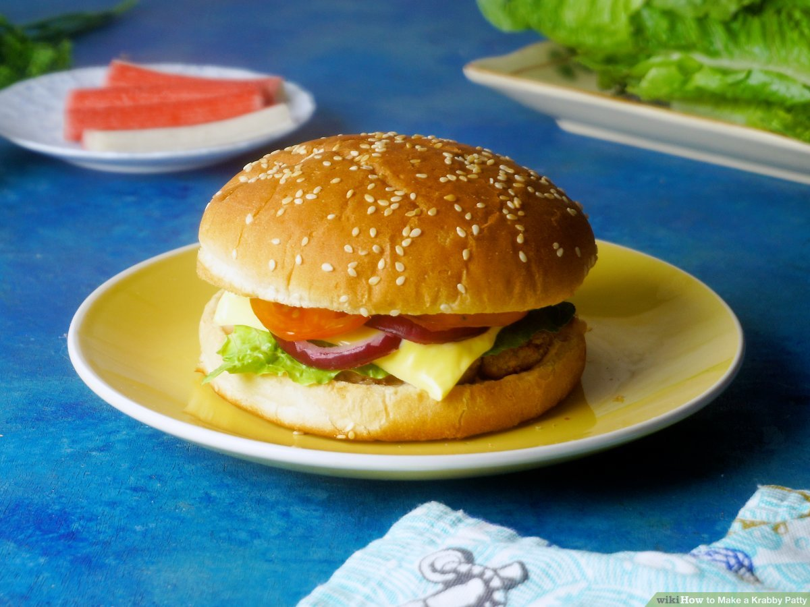

KRABBY PATTY

Description
The Krabby Patty is the food of choice in SpongeBob SquarePants. While its
secret ingredient remains an elusive mystery in the show, this recipe
ensures you can make your own Krabby Patty at home.
INGREDIENTS
Here's what you'll need to make the perfect krabby patty burger:
- 1.25lb. lean ground beef
- 1 ½ teaspoon Old Bay Seasoning
- Salt, to taster
- 4 slices of cheddar cheese
For the Aioli, or secret sauce:
- ⅓ cup mayonnaise
- ¾ teaspoon Old Bay Seasoning
And to complete the krabby patties:
- 4 burger buns with sesame seeds
- 1 red onion, sliced
- 1 tomato, sliced
- 2 pickles, sliced
- 4 leaves of butter lettuce
- Mustard and ketchup, as desired
HOW TO MAKE A KRABBY PATTY
-
Make the aioli. Combine the mayonnaise with Old Bay
Seasoning in a small bowl. Once they're fully mixed, set the sauce
aside.
-
Make the patties. In a large bowl, add the ground beef,
Old Bay Seasoning, and salt. Mix thoroughly until everything combines,
then shape the mixture into four burger patties.
-
Cut out the cheese. After the patties are cooked
through, using a star-shaped cookie cutter, cut out the cheese. Place
the cheese stars on top of the hot patties and let the cheese melt for
30 seconds.
-
Assemble the krabby patties. Spread the aioli from the
first step over the bottom half of the buns. Place the hamburgers on
top, followed by lettuce, onions, tomatoes, ketchup, mustard, and
pickles. Close it with the top bun, serve, and enjoy!